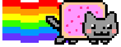
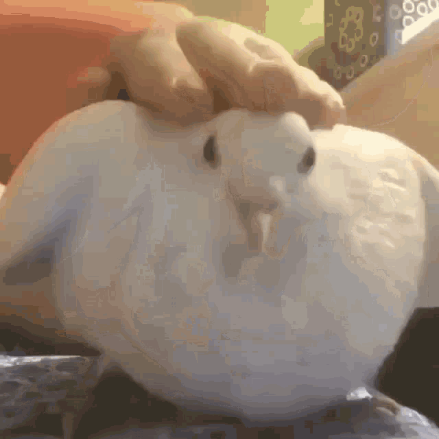
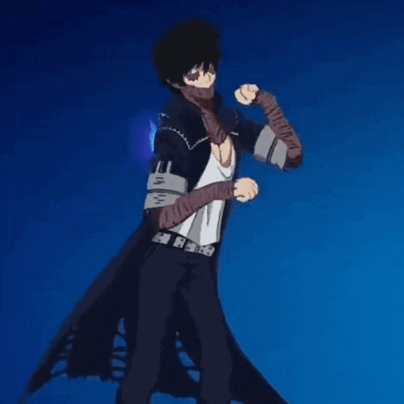
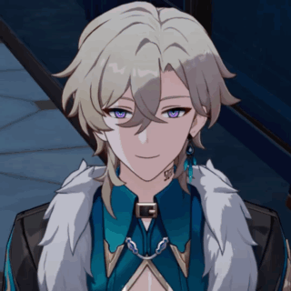
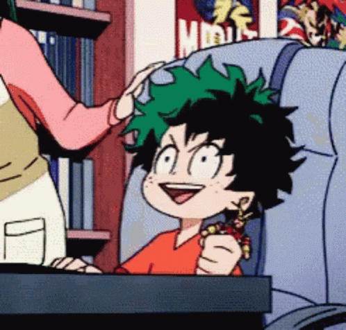

22.09.2026
Здравствуйте! Это первая попытка создать архив по нашей группе FARMBUSTERS! На данном сайте планируются папки с нашими рисунками, скриншотами, музыкой, видео и т.д.
Крайне уместное звуковое сопровождение!!


[ ДИСКЛЕЙМЕР: ВСЕ МАТЕРИАЛЫ, РИСУНКИ, МУЗЫКА И ВИДЕО ПРИНАДЛЕЖАТ ИХ АВТОРАМ И ГРУППЕ FARMBUSTERS. ДАННЫЙ САЙТ ЯВЛЯЕТСЯ НЕКОММЕРЧЕСКИМ ФАНАТСКИМ АРХИВОМ И НЕ ИМЕЕТ ЦЕЛИ НАРУШИТЬ ЧЬИ-ЛИБО АВТОРСКИЕ ПРАВА. ]





29.06.2024 - день знакомства
14.07.2024 - день создания группы
12.03.2007 - день рождения Кирувии
12.04.2012 - день рождения Кислицы
23.06.2012 - день рождения Сарвеники
21.08.2006 - день рождения Деку
СОЦСЕТИ
[ В ПРОЦЕССЕ ]